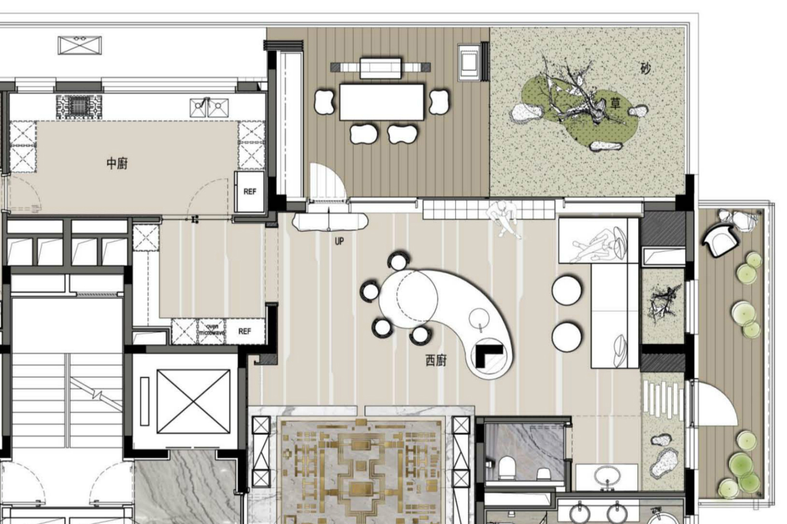
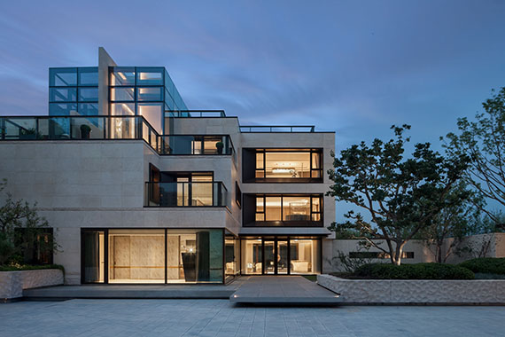

高级定制.1V1
人生而有别，对住宅的要求同而求异，注重研究城市主体“人”的地缘个性与喜好，要认知人性的本源需求，为居住者提供最适宜的住宅
不同地域的人性需求都在房地产的产品中得到有效的对接，大到社区规划，居住布局，小到地砖花草，门窗把手，都要烙上当地的印记。住什么样的社区就有什么样的生活，从某种意义上说，居住环境影响心理甚至人格。在借鉴欧美设计理念时，并非为“出位”而借鉴。而是一种结合国情的借鉴，在技术上追求超越，力求在整体规划，空间布局，功能设置，社区氛围等方面，把新时代的国际化生活带给客户。如同一切消费品，量身订制才更契合需求，高端物业在建造时有应该考虑客户的个性化需求,建筑的精美和谐在于建筑那些经理历史淬炼和人文审美的规划，纯粹、原味、纯正血统的建筑形态才是引导高尚住宅的载体。

契合社区人群结构变化，激发人们内心沉睡的记忆，唤醒已经陌生的需求，引领人们对高尚生活方式的理解和追求。一个优秀的别墅庭院设计决不仅仅是种些草，植些花那么的简单。最好的庭院是让我们居住其中，却感觉不到自然在哪里终了，艺术在哪里开始，而这一切的基础就在于对庭院主人生活方式和个性习惯的考虑。
契合社区人群结构变化，激发人们内心沉睡的记忆，唤醒已经陌生的需求，引领人们对高尚生活方式的理解和追求。一个优秀的别墅庭院设计决不仅仅是种些草，植些花那么的简单。最好的庭院是让我们居住其中，却感觉不到自然在哪里终了，艺术在哪里开始，而这一切的基础就在于对庭院主人生活方式和个性习惯的考虑。
